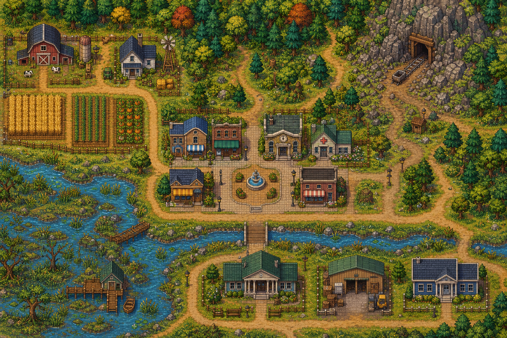
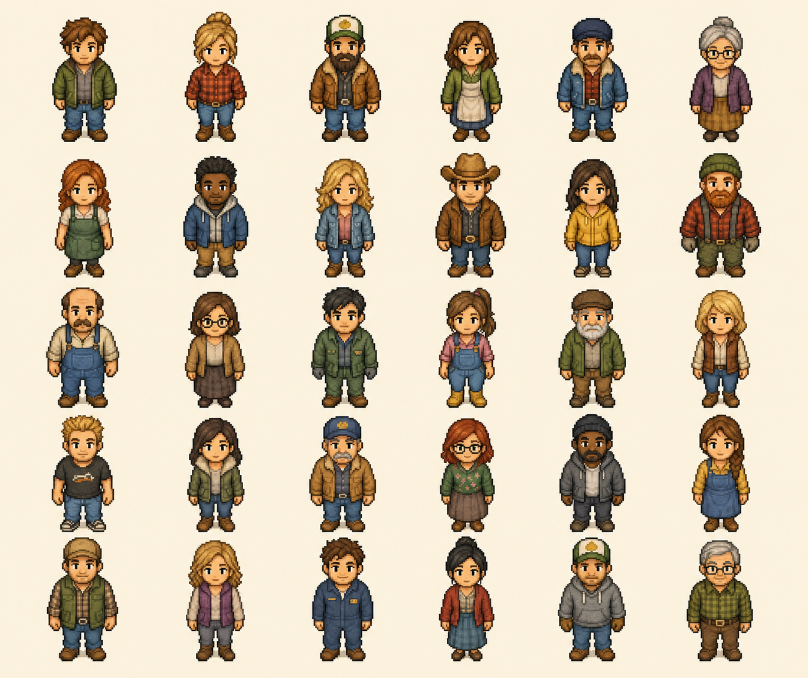

清晨 · 镇中心
两个问价的人
- Zoe Hayes
- 豌豆你收吗？
- Caleb Foster
- 我还想问你收不收呢。
- Zoe Hayes
- 得，两个问价的。

枫溪小报 · 春季 · 阴天
清晨，十个人先去了公告板。午后，三个人先后找 Henry Fisher 谈合同。入夜，十七个人回了小屋，Reid Brooks 还在旧桥守夜。
清晨 · 镇中心
清晨 · 会计协会办公室
午后 · 高金采购站
Austin Miller 原想三个时段都修矿车，清晨和午后去了矿洞，夜里改在温室门口维护工具。其余 89 项按原计划执行。
| 居民 | 清晨 | 午后 | 夜里 |
|---|---|---|---|
| Wyatt Porter | 工具维护 | 工具维护 | 工具维护 |
| Alice Reed | 查看公告栏 / 接任务 | 小额农具采购 | 回小屋休息 / 整理仓房 |
| Willow Bailey | 小额农具采购 | 小额农具采购 | 回小屋休息 / 整理仓房 |
| Zach Rivera | 周会 / 日程会 | 周会 / 日程会 | 周会 / 日程会 |
| Victor Perry | 临时取证拍照 | 修水渠 | 临时取证拍照 |
| Maya Fisher | 私下谈判 | 查看公告栏 / 接任务 | 回小屋休息 / 整理仓房 |
| Henry Fisher | 合同谈判 | 合同谈判 | 合同谈判 |
| Maya Rivera | 预算会 | 预算会 | 预算会 |
| Simon Parker | 工具维护 | 工具维护 | 回小屋休息 / 整理仓房 |
| Anna Morgan | 采购县城物资 | 合同谈判 | 合同谈判 |
| Paige Rivera | 周会 / 日程会 | 周会 / 日程会 | 回小屋休息 / 整理仓房 |
| Caleb Foster | 查看公告栏 / 接任务 | 合同谈判 | 回小屋休息 / 整理仓房 |
| Zoe Hayes | 查看公告栏 / 接任务 | 小额农具采购 | 回小屋休息 / 整理仓房 |
| Cole Miller | 合作社登记 / 制度备案 | 合作社登记 / 制度备案 | 周会 / 日程会 |
| Austin Brooks | 查看公告栏 / 接任务 | 种子 / 化肥赊购 | 回小屋休息 / 整理仓房 |
| Theo Cooper | 查看公告栏 / 接任务 | 种子 / 化肥赊购 | 回小屋休息 / 整理仓房 |
| Fiona Baker | 周会 / 日程会 | 周会 / 日程会 | 回小屋休息 / 整理仓房 |
| Wyatt Brooks | 预算会 | 预算会 | 预算会 |
| Hazel Perry | 询问民间故事 / 老地图线索 | 询问民间故事 / 老地图线索 | 询问民间故事 / 老地图线索 |
| Reid Brooks | 采购县城物资 | 采购县城物资 | 夜间守棚 / 抢险 |
| Isaac Bailey | 查看公告栏 / 接任务 | 种子 / 化肥赊购 | 回小屋休息 / 整理仓房 |
| Iris Turner | 查看公告栏 / 接任务 | 小额农具采购 | 回小屋休息 / 整理仓房 |
| Reid Parker | 查看公告栏 / 接任务 | 合同谈判 | 回小屋休息 / 整理仓房 |
| Dylan Hughes | 查看公告栏 / 接任务 | 询问民间故事 / 老地图线索 | 询问民间故事 / 老地图线索 |
| Lena Carter | 合同谈判 | 溪边私下谈话 | 溪边私下谈话 |
| Austin Miller | 修复旧矿车 / 轨道 | 修复旧矿车 / 轨道 | 工具维护 |
| Reid Stone | 种子 / 化肥赊购 | 种子 / 化肥赊购 | 回小屋休息 / 整理仓房 |
| Anna Foster | 合同谈判 | 合同谈判 | 回小屋休息 / 整理仓房 |
| Paige Ward | 查看公告栏 / 接任务 | 询问民间故事 / 老地图线索 | 回小屋休息 / 整理仓房 |
| Peter Hayes | 采购县城物资 | 工具维护 | 回小屋休息 / 整理仓房 |
枫溪镇
有人在田地忙碌，有人在镇上碰面，也有人在公告板前停下来。
天气、行动、对话和小报，会把一天慢慢写出来。
不急着解释太多，只留下一扇可以推开的门。
进入小镇
打开页面，就能看到枫溪镇今天的天气、居民、公告板和镇上小报。
